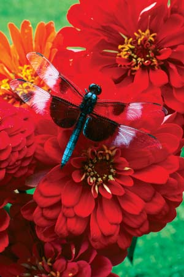
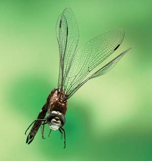
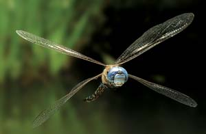
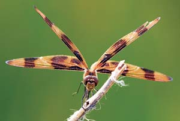
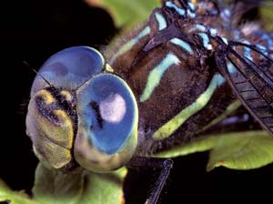
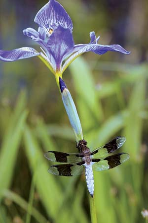

Dazzling Dragonflies
Both beauty and beast, dragonflies are among the planet’s most ancient - and awe-inspiring - creatures.
By Terry Krautwurst
August/September 2006
The next time you spy a dragonfly skimming over a pond or darting and diving among streamside reeds, consider this: For more than 300 million years, the whirring wings of dragonflies have shimmered in the light of our planet’s sustaining star. Long before the first two-legged mammals stumbled onto the scene, before the first birds, before the first dinosaurs, dragonflies thrived in the moist jungles that once covered much of Earth. And some of them were huge: Etched in the fossil record are the veined wings of dragonflies with wingspans of nearly 2½ feet.
That the dragonfly has survived so long while other creatures have come and gone is no mere accident. Few organisms - past or present - can claim a more perfect design for perpetuation. Although human eyes are easily beguiled by their sparkling flight on gossamer wings, these insects are hardly mere “flying flowers.” Dragonflies are tough, deadly predators and determined progenitors - both beauty and beast, driven on a reproductive path that stretches from prehistory to time’s horizon.
Amazing Diversity
Scientists place dragonflies in an insect order all their own, Odonata. They further divide that group - more than 5,500 species worldwide - into two suborders: the “true” dragonflies (Anisoptera), and damselflies (Zygoptera).
It’s easy to distinguish between a dragonfly and a damselfly. A resting dragon holds its four wings out flat, to its sides, and the hind pair is larger than the front. A damselfly at rest folds together all four of its wings, which are essentially the same size, vertically over its body. And while damsels’ eyes are on opposite sides of their heads, dragonfly eyes are close together. Despite these distinctions, most scientists take the practical route and use the word “dragonfly” when referring to both the dragonfly and the damselfly.
In the United States, there are about 450 species of dragons and damsels. In size, they range from the elfin skimmer, which measures just over three-fourths of an inch long - about the diameter of a nickel - to the giant darner, which stretches 4¼ inches.
Size, however, is the least of the physical features that define dragonfly diversity. A dragonfly’s eyes, for instance, may be green, black, copper, red, blue or some combination thereof. And when it comes to body shape, dragonflies are every bit as diverse as humans. Some are thick at the thorax, where the wings and legs attach; some have thin, needlelike abdomens; others have abdomens that taper from wide in front to narrow at the tip, or jut slightly in and out along the entire length, like miniature stalks of bamboo.
Then there is the dragonfly’s extraordinary range of body colors. The spectrum spans hues from muted brown to eye-popping neon orange; from iridescent metal-flake gold and candy apple red to dusty powder blue, soft rose and polished ebony. Many dragonflies are patterned - their bodies emblazoned with dots, dashes and geometrics and their otherwise transparent wings spotted, striped or swirled in clouds of contrasting shades, like a ’70s Peter Max painting. Simply reading a sampling of dragonfly names gives you a taste of their visual variety: sulphur-tipped clubtail, sparkling jewelwing, twelve-spotted skimmer, red-tailed pennant, frosted whiteface, flame skimmer, American rubyspot, chalk-fronted corporal, blue-faced darner, orange shadowdragon.
Dragonflies also vary widely in their habits and habitat. They all require the presence of water, but thanks to Earth’s wondrous plumbing, that requisite is hardly limiting. For every bog, swamp, marsh, pond, creek, stream, river or lake, there are dragonflies to call it home. (If, that is, we haven’t despoiled it: see “Dragonflies vs. Humans?” below) Little wonder, then, that dragonflies are found in every climate and every state (on every continent, in fact, except Antarctica), from suburban yards to deserts.
An Alien Predator?
The flashy-bodied, pirouetting aerial insect we think of as a dragonfly actually spends all but a few fleeting weeks of its life span (one to three years for most species) underwater, as an entirely different-looking animal. Although “larva” or “nymph” are accurate terms, they do not sufficiently describe an immature dragonfly. Picture a small, spiky, brown or green six-legged armored oval designed by Captain Nemo or the creators of the movie Alien and you’ll have a better idea (also see photo, right).
Within minutes after hatching from its egg, a dragonfly nymph is on the prowl for prey, and it is supremely well-equipped for hunting. Rather than fire-breathing, this dragon is water-breathing. By contracting its abdominal muscles, the nymph pumps water in and out through its rectal cavity, which is lined with gill-like structures that extract and distribute oxygen. To move quickly, the nymph squeezes a jet of water forcibly out of its rectum, hurtling it forward like a torpedo.
At its head end, the nymph is armed with an extendable hinged lower lip sporting a tonglike pair of hooked claws. When it spies a meal, the nymph contracts its muscles, forcing body fluid into its head. The hydraulic pressure thrusts the long-armed lip forward, tongs open. In one-hundredth of a second, the lip and claws extend, close around the target and retract, pulling the victim into the predator’s mandibles. Dragonfly nymphs are insatiable carnivores, devouring all manner of bite-size aquatic life, including their own siblings, as well as tadpoles, salamanders and small fish.
Though barely more than microscopic at first, a dragonfly nymph grows steadily. On the path to adulthood, it molts (sheds its hard exoskeleton) between eight and 15 times. Logically enough, large dragonfly species produce large larvae (up to 2 inches long), while the larvae of smaller species are correspondingly proportioned. One shudders to think of the larvae of those prehistoric dragonflies with 2½ foot wingspans.
With each molt, the creature further develops. Its compound eyes gain more and more lenses. Its legs and wing pads lengthen. Eventually, it climbs out of the water, locks its clawed legs onto a plant stem, rock, branch or some other surface, and begins to break out. The larval skin splits along the upper back, and the adult pushes itself through the opening, head and forelegs first. Using its legs for leverage, it pulls its abdomen free of the shell.
The newly emerged creature has the bulbous eyes of a dragonfly, but its body is soft, pale and still partially compacted for life in a smaller space - the abdomen telescoped in, the wings limp and folded lengthwise along its back. Its body pulses, pumping blood into the wings, which gradually expand and then flip out to the sides, glistening. Next, the abdomen inflates to its full length - and the dragonfly’s entry into the terrestrial world is complete.
The insect can fly now, but its body and wing veins have yet to stiffen, so its flight will be weak and fluttering at best. There is probably no other time in an adult dragonfly’s life when it is more vulnerable. With luck, no predators will give it cause to launch prematurely. After enough time has passed for its body parts to harden (at least several hours; a day is better): Whrrrr and flash - another dragonfly takes to the air.
Winged Wonder
Although an adult dragonfly has left its larval looks behind, it has lost nothing of its monstrous appetite. And it has gained near superpowers for finding and chasing down food.
A dragonfly’s head, for example, is almost all eyes - two enormous bulging compound eyes, each consisting of some 20,000 to 30,000 individual eyes called ommatidia. Each of those eyes, in turn, is wired to the insect’s brain - of which 80 percent, entomologists say, is devoted to vision. The ommatidia vary in size and resolution and are fused together, forming different points of focus. A dragonfly sees through all of them at once - and sees all the colors we can, plus ultraviolet and polarized light. Pity a poor quarter-inch midge in flight, at most a mere speck to us, but a virtual flashing “Good Eats” sign to a light- and motion-sensing dragonfly. There’s little chance of that midge avoiding notice, too; the dragonfly’s bulbous eyes and swivel-mounted head provide a nearly 360 degree view.
Even slimmer are an insect’s odds of escaping a dragonfly. With a top speed of about 35 mph, dragonflies are the planet’s fastest flying insects. Surely they’re also the most acrobatic. With the greatest of ease a dragonfly can hover, zip forward or back, soar up or down, corkscrew, turn 180 degrees, or stop on a dime.
The secret is in the dragonfly’s four wings - two pairs that operate independently, beating 20 to 45 times a second. Each wing consists of a crisscrossing network of veins sandwiched between transparent membranes. The veins carry blood and oxygen, but they also serve as a dynamic framework - sufficiently rigid to support the wings like an airplane’s struts, yet flexible. As the dragonfly’s wings beat and its position and speed change, the veined supports subtly bend and shift, creating changes in the wings’ surface shape and instantly altering the insect’s aerodynamics to match each moment.
Dragonflies snag their prey on the fly - gnats, mosquitoes, moths, butterflies and other dragonflies all are fair game. They scoop up small insects directly in the mouth, rapidly spitting out the wings and zooming to the next victim. Six long, bristly legs form an underbody basket for snatching larger prey, which they then pass to their mandibles and gobble in midair or carry to a perch for more leisurely dining.
Circle of Life
Food fuels the dragonfly’s fast-lane life, but reproduction is its driving force. Those madly dashing dragonflies you see near water on a sunny day likely are males looking for more than a meal. Dragonfly courtship is generally nonexistent. The males of most species stake out mating territories, vigorously chasing competitors away while waiting to grab any species-compatible female that happens along.
“Grab” is exactly the right word, for upon spying a female, the suitor flies just above and ahead of her and grasps the back of her head or neck with pincerlike claspers at the tip of his long abdomen. The pair flies attached, head to tail. Before mating can begin, however, the male must curl forward and under itself, transferring sperm from near the tail end of his abdomen to a pouch at the upper end, just behind his back legs. With the sperm transferred, he straightens and she curls her abdomen up and under him, bringing her reproductive organs into contact with the pouch. Scientists call this the “wheel position,” but more romantic minds have observed that the linked pair forms a heart shape.
Depending on the species, the two dragonflies may remain in this position for only a few seconds or for about an hour. Female dragonflies deposit their eggs in a variety of ways. Some just dip or splash the tips of their abdomens in water; others insert the eggs in plant stems or poke them into mud or algae. Regardless of the technique, with luck the result will be the same: the eggs will hatch, and the cycle that has enlivened our skies with shimmering wings since the dawn of time will continue.
Dragonflies vs. Humans?
Dragonflies can sting. They’ll bite if you touch them. You may have heard the tales, but none of them are true - humans have nothing to fear from dragonflies. The opposite, unfortunately, may not be the case. Like so many other creatures dependent on fresh water to sustain their life cycles, many species of dragonflies are suffering from human activities that destroy or degrade aquatic habitat.
According to one estimate, roughly 15 percent of North American dragonfly species in the wild are at risk of extinction in the foreseeable future. Worldwide, hundreds of species are threatened or endangered.
The culprits are all too familiar. A partial list includes wetland drainage; chemical and organic waste runoff; siltation; dredging of stream and river bottoms; excessive pumping of underground aquifers; and logging, grazing and plowing too close to bodies of water.
You can help by avoiding such practices on your own land and by getting involved with organizations working to protect the planet’s aquatic resources. You could also create a backyard pond or water garden to provide much-needed habitat. Avoid stocking your pond with fish, which prey on dragonfly nymphs. A healthy population of dragonfly nymphs will reward you by voraciously gobbling mosquito larvae; in one study of two larval black-tipped darners, each underwater hunter consumed more than 1,000 would-be mosquitoes before emerging as an aerial adult. (Adult dragonflies eat adult mosquitoes but aren't considered major predators, simply because most mosquito species fly primarily at dusk or later, when most dragonflies are roosting.)
|
 BILL BEATTY For more than 300 million years, the whirring wings of dragonflies have shimmered in the light of our planet’s sustaining star. |
 MICHAEL DURHAM Common darner |
 MICHAEL DURHAM The dragonfly is both acrobatic and fast - with its four wings, it can zip, soar and turn on a dime at speeds up to 35 mph. |
 DWIGHT KUHN Skimmer dragonfly nymph |
 RICHARD DAY/DAYBREAK IMAGERY Halloween pennant |
 DWIGHT KUHN White-faced meadowhawk capturing a mosquito. |
|
 DWIGHT KUHN Each bulging compound eye actually consists of up to 30,000 individual eyes! |
 RICHARD DAY/DAYBREK IMAGERY Common whitetail |
|